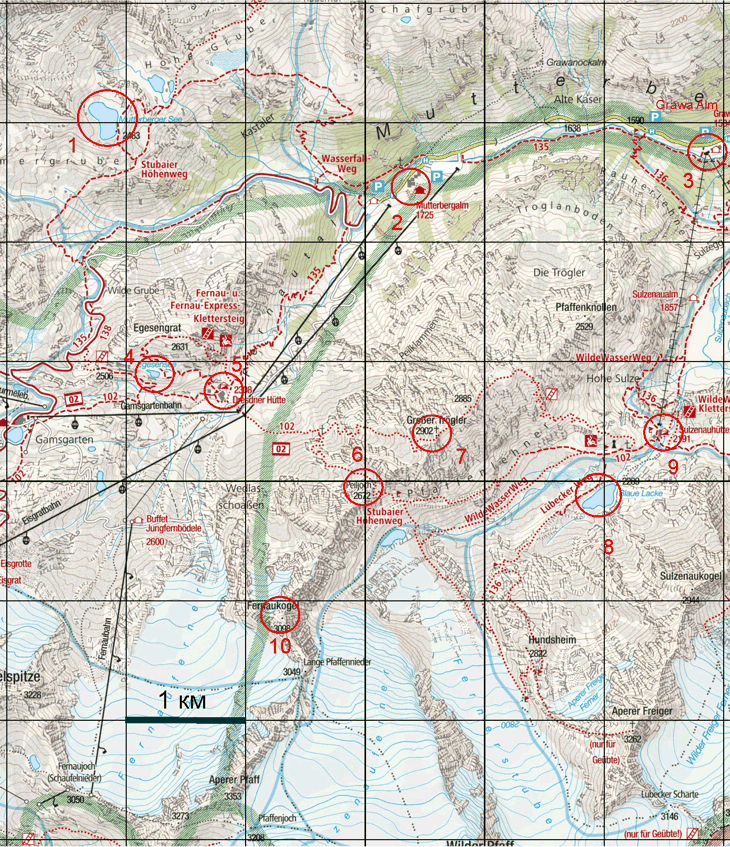
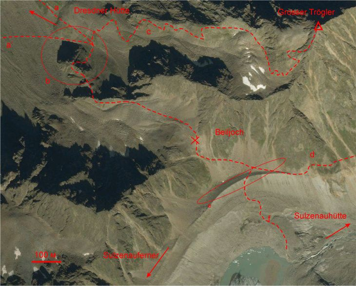
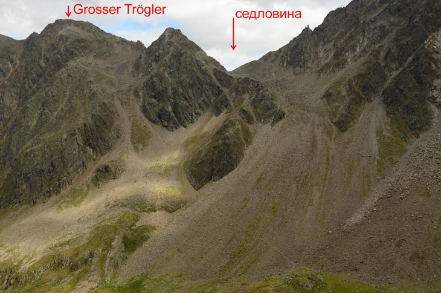
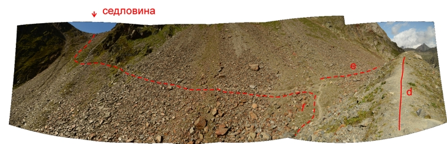

Перевал Beiljoch (Peiljoch) (6, см. рис. ) находится в южной части Штубайских альп, севернее главного водораздела. Тропа, ведущая через перевал, классифицируется как ″черная″, высота седловины составляет 2672 м. Перевал расположен между вершинами Fernaukogel(3098) (10) и Großer Trögler (7), к Северу от вер. Zuckerhütl(3507) (см. рис. , ).
Перевал ориентирован с запада на восток и соединяет долины Sulzenau и Fernautal. Обе долины выходят в долину Stubaital. В долине Sulzenau находится ледник Sulzenauferner, озеро Blau Lake (8), приют Sulzenauhütte (9). Через долину Sulzenau идут маршруты к вершине Wilder Friger(3418). Долина Fernautal является горнолыжным курортом с развитой инфраструктурой: подъемниками, гостиницами и д.т. В долине находится приют Dresdner Hütte (5).
Ближайшая автомобильная дорога проходит по долине Mutterbertal. Существует автобусное сообщения с хуторами Mutterbergalm (2) и Grawa Alm (3), к которым выхолодят долины Fernautal и Sulzenau соответственно. Приют Dresdner Hütte соединен с хутором Mutterbergalm пассажирской канатной дорогой, действующей круглогодично. В долине Fernautal есть гравийные дороги, используемые для поддержки горнолыжной инфраструктуры. Ближайшим крупным населенным пунктом является Neustift в долине Stubaital.

Рис. . Карта района издaтельства Kompass.

Рис. . Спутниковый снимок перевала Beiljoch
Перевальный взлет имеет крутизну от 20 (под седловиной) до 40 градусов; перепад высот составляет около 350 м. Крутой участок перевального взлета не проходится. Вместо этого тропа (a, см. рис. ) поднимается серпантином к пологому участку по скально-травянистому склону ребра (b). На наиболее крутом участке подъема провешена наклонная феррата, не требующая закрепления на ней. Далее тропа траверсом пологого участка скально-осыпного склона выходит к седловине.
Тропы (a) и (a') ведут к Dresdner Hütte, (a') -- старый путь, появление нового пути связано со строительством дороги вдоль долины и моста через реку.
Около ребра (b) находится развилка, от которой начинается тропа, ведущая к вер. Großer Trögler (2902) (с)

Рис. . Западный взлет перевала Beiljoch.
Седловина широкая, покрыта каменной осыпью. На седловине сооружено огромное количество высоких туров.
Восточный перевальный взлет представляет собой скально-травянистый склон крутизной 45 градусов по которому идет достаточно широкая набитая тропа. Высота взлета составляет 80 м. Взлет отделен от склона невысоким (около 10 м со стороны перевала) осыпным гребнем (e на рис. ), который бил сформирован, по всей видимости, в процессе таяния ледника Sulzenauferner. К перевальному взлету от озера под ледником Sulzenauferner ведет тропа (f), проходящая по скально-осыпному склону крутизной около 20 град. Другая тропа (d), выходящая к перевальному взлету с севера, идет траверсом хребта. Указанная тропа идет непосредственно от приюта Sulzenauhütte. По нашим сведениям на тропе имеется феррата, но нам неизвестно, в каком состоянии она находится.

Рис. . Широкоугольная паномарма восточного взлета перевала Beiljoch. Обозначения соответствуют рис.
Сложность прохождения перевал Beiljoch летом соответствует категории 1А. При его прохождении необходима простейшая самостраховка ледорубом, либо использование треккинговых палок. Для движения по феррате необходимы перчатки для работы с веревкой.
Долины Sulzenau и Fernautal очень популярны среди европейских туристов, кроме того их структура такова, что трудно найти место для ночевки которое было бы не видно с какой либо из популярных среди туристов троп. С запада ближайшее к перевалу место, удобное для остановки лагеря, следует искать около озера Mutterberger See (1, см. рис. ). С севера от озера протекает небольшой ручей, который можно использовать как источник воды.
При необходимости лагерь может быть разбит около озера Egessensee (5) либо, в крайнем случае, на выполаживании западного склона вер. Großer Trögler. Поскольку указанные места находятся рядом с популярными тропами, устанавливать лагерь можно только после заката, а собирать необходимо перед рассветом. Ночью нужно следить, чтобы свет фонарей не был виден из хютте, поскольку он может быть расценен как сигнал бедствия. Еще одним недостатком указанных стоянок является проблемы с водой. Озеро Egessensee хоть и является проточным, ручьев питающих его как токовых нет – вода слабо сочится между камней, поэтому в случае установки лагеря воду придется брать из озера и обязательно кипятить. При установке лагеря на склоне Großer Trögler за водой придется ходить к ручью вниз по тропе.
Технически удобным местом для постановки лагеря к востоку от перевала является юго-восточный берег озера Blau Lake (8), однако из-за наличия популярной у туристов тропы «Lübeker Weg» ставить и снимать лагерь необходимо после захода и до восхода солнца соответственно.
К приюту Dresdner Hütte (5) (рис. map) и далее к хутору Mutterbergalm (2).
К приюту Sulzenauhütte (8) и далее к хутору Grawa Alm (9)(назван в честь водопада, расположенного рядом).